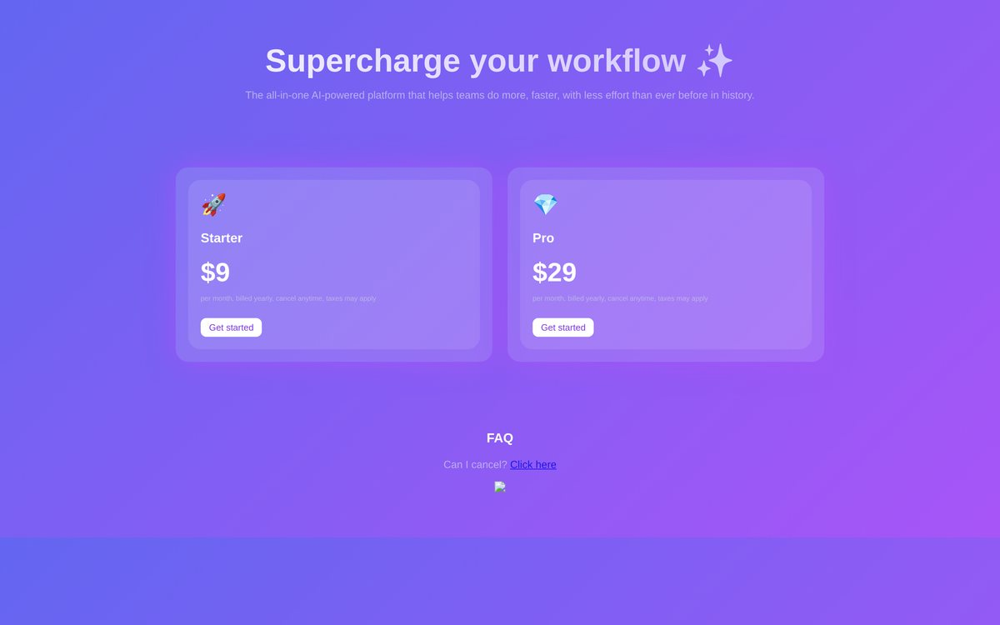
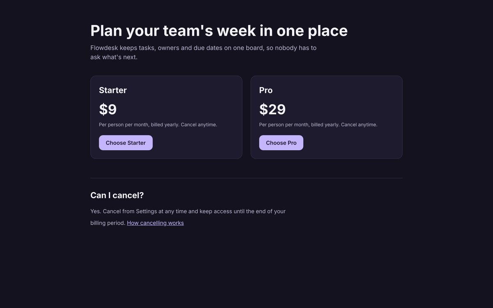

Three AI tells in one card
Gradient text, emoji icons and a coloured glow make a page read as generated.


The number
- Before
- 3 signsgradient-filled h1 · emoji used as icons · rgba(168, 85, 247, 0.8) 0 0 40px glow
- After
- 0 signsand the page still reads as a pricing page
Why it happened. These are defaults a model reaches for when a prompt does not say what the product is. None of them tells a buyer anything about the product.
The fix
h1 { color: var(--ink); } /* no background-clip: text */
.plan { border: 1px solid var(--line);
box-shadow: none; } /* no coloured glow */
/* delete the emoji; use one icon set or none */Check your own page
Look for: text filled with a gradient, emoji standing in for icons, glow shadows in the accent colour, a pill label above the title, exactly two hero buttons, three identical icon cards.
Where these numbers come from. One pricing page an AI tool built from a single prompt, measured in Chromium at 1440 × 900 and 390 × 844 on 24 November 2026, before and after fixing exactly what the checks reported (38 → 66 of 66). Both pages are public.
Before pageAfter pageGuide: How to review a design Claude made